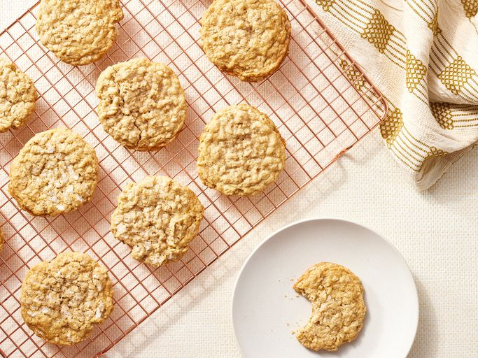

Oatmeal Cookies Recipe

Description
If this oatmeal cookie recipe is not already a staple in your dessert rotation,
it will be soon. These oatmeal cookies are soft, chewy, and utterly irresistible.
Ingredients:
- 2 cups all-purpose flour
- 1 teaspoon baking soda
- 1 teaspoon salt
- 1 cup unsalted butter, softened
- 1 teaspoon vanilla extract
Steps:
- Make the dough:Whisk the dry ingredients in a medium bowl. In a separate bowl, beat the butter and sugar. Beat in the eggs and vanilla. Add the dry mixture to the wet mixture, then stir in the oats. Cover and chill for at least one hour (this step is important to prevent spreading!).
- Roll the chilled dough into balls and place the balls on baking sheets. Dip a fork in water, then in sugar. Use the fork to flatten each dough ball.
- Bake in the preheated oven until the edges are golden brown and the centers are nearly set. Cool on the baking sheet for 5 minutes, then transfer to a wire rack.
Home Page